imagenes/ esté al lado de este archivo HTML y contenga las capturas (ver tabla al final).MANUAL_USUARIO.html..docx: Archivo → Guardar como → Documento de Word (.docx).
Si una imagen sale como cuadro vacío "imagen no disponible", significa que el archivo PNG no está en imagenes/. Guardalo desde el chat con el nombre exacto indicado.
Sistema de gestión de la playa de autos. Multi-sucursal, con clientes, vehículos, ventas, cuotas, cobranzas y flujo de caja.
Este manual cubre lo que está publicado en producción hoy. Hay mejoras adicionales en staging que se incorporarán en el próximo deploy y serán documentadas después.
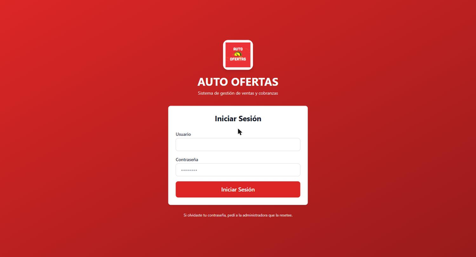
Entrá al sitio y tipeá usuario y contraseña. Si los datos son correctos vas directo al panel principal. Si te equivocaste 5 veces en un minuto, el sistema te bloquea unos minutos para evitar intentos maliciosos — esperá y volvé a probar.
Para salir, hacé clic en el círculo con tu inicial arriba a la derecha y elegí "Cerrar sesión".

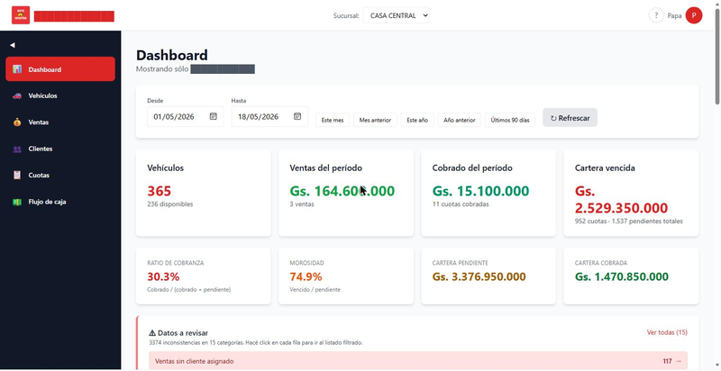
Apenas entrás, ves el dashboard con un resumen del negocio:
Arriba a la izquierda está la barra lateral con todas las secciones:
Arriba al medio aparece el selector de sucursal (sólo si tu empresa tiene más de una). Cuando elegís una, todas las pantallas filtran por ella. "Todas" muestra el agregado de las dos sucursales.
Nota: el dropdown del selector de sucursal es nativo del navegador y se renderiza a nivel del sistema operativo, por lo que no aparece en capturas de pantalla del browser. En la imagen del dashboard ya se ve el botón con "CASA CENTRAL" como sucursal activa.
En la parte superior del dashboard hay un filtro de fechas (desde / hasta) con accesos rápidos: Este mes, Mes anterior, Este año, Año anterior. Todos los KPIs respetan ese período.
Andá a 🚗 Vehículos en la barra lateral y hacé clic en "+ Nuevo vehículo".
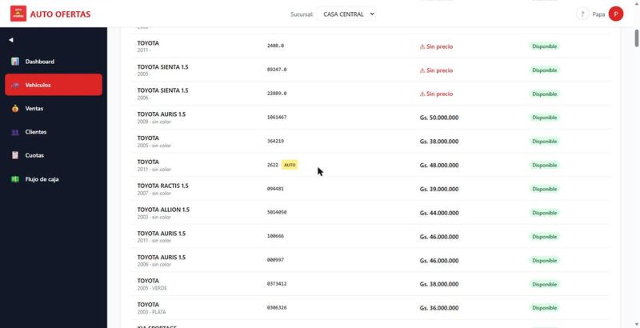
Nota: el botón "+ Nuevo vehículo" sólo aparece para usuarios con rol administrador. Los vendedores ven la lista en modo lectura.
Campos obligatorios:
Opcionales:
💡 Tip: el costo total del vehículo se calcula automáticamente sumando FOB + Container + Despacho + Cam-Vol + extras. Lo ves en la vista de detalle.
Clic en "Crear vehículo". Vuelve a la lista y el nuevo aparece arriba.
Andá a 👥 Clientes y hacé clic en "+ Nuevo cliente".
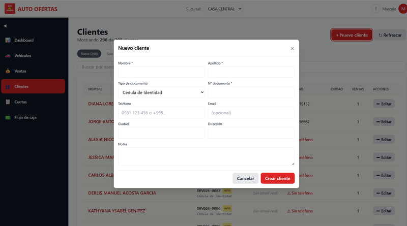
Campos obligatorios:
Opcionales pero muy recomendados:
Clic en "Crear cliente".
⚠️ Si el cliente ya existe (mismo documento) el sistema te avisa con un error. Andá a la lista, buscalo y editalo en lugar de crearlo duplicado.
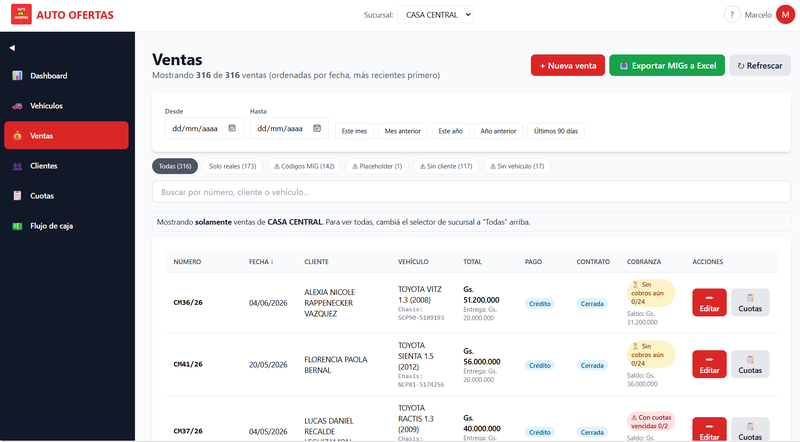
Andá a 💰 Ventas y hacé clic en "+ Nueva venta".
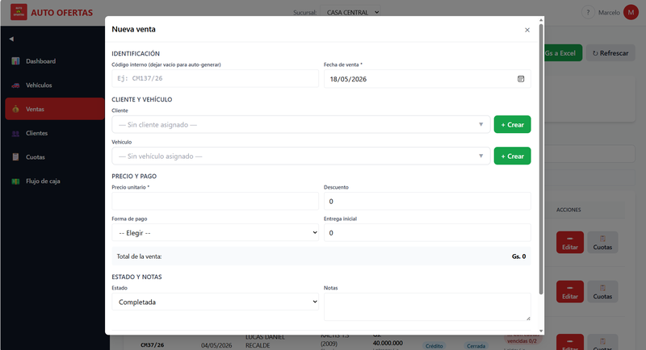
Pasos:
CM/26-001 (Cerrada Mes-año-número) o MC/26-001 para Mixto. Si lo dejás vacío el sistema asigna ??/26-001 que después podés corregir.Clic en "Crear venta".
💡 Si la venta es a Crédito, después del create vas a querer generar el plan de cuotas. Ver siguiente sección.
Desde 💰 Ventas hacé clic en el ícono de cuotas (📋) de la fila de tu venta. Se abre el modal "Cuotas de la venta CM/26-XXX".
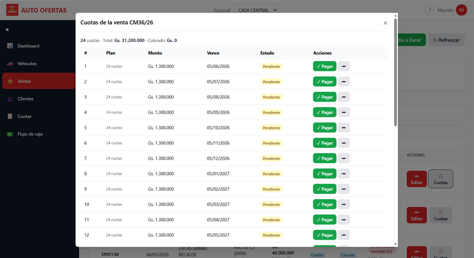
Abajo del modal, en la sección "Generar plan de cuotas", completá:
Clic en "🎯 Generar preview". Vas a ver una lista con las N cuotas proyectadas.
Verificá que:
Si está bien, clic en "💾 Guardar cuotas" y se crean en el sistema. Si necesitás ajustar, cambiá los inputs y dale otra vez a "Generar preview".
⚠️ Si ya tenés cuotas y querés agregar más (planes parciales tipo "primero 6 cuotas, después negociar otras 6"), el sistema lo permite — sólo escribe encima del modelo "Cuotas existentes".
Hay 2 caminos:
En la tabla de cuotas, fila por fila, vas a ver el botón "💵 Pagar" en las cuotas que están pendientes.
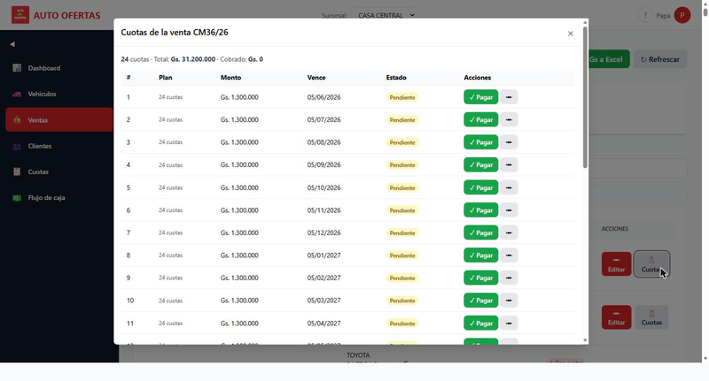
Hacé clic y se abre el formulario:
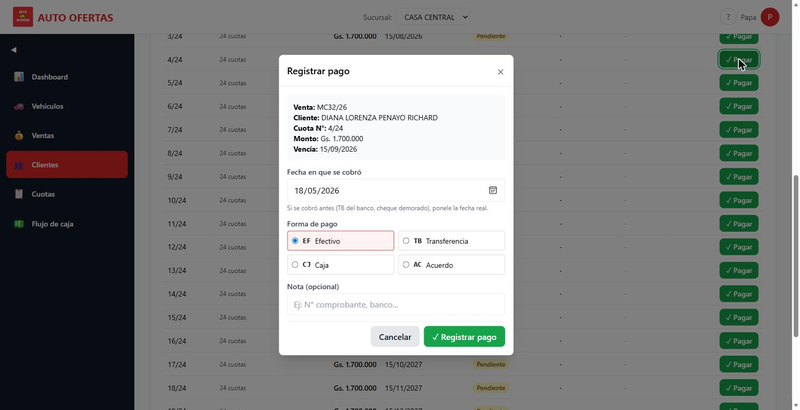
Completá:
Clic en "Confirmar pago".
💡 Cuando cobrás una cuota, el sistema automáticamente genera un movimiento de ingreso en el flujo de caja. No tenés que cargarlo a mano.
Andá a 👥 Clientes → buscalo → clic en su nombre. Ves todas sus ventas y cuotas. La columna "Acción" tiene el mismo botón "💵 Pagar".
Esta vista es más cómoda cuando vino el cliente al local y querés revisar todo su historial al mismo tiempo.
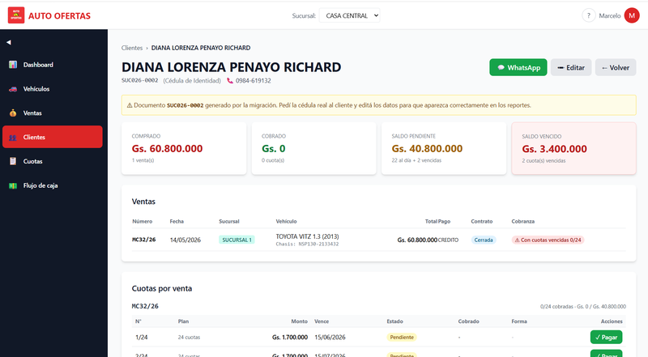
Si una cuota está cerca del vencimiento o ya venció, podés mandarle recordatorio al cliente con un click.
En el detalle del cliente (sección 7) se ve el botón "💬 WhatsApp" verde arriba a la derecha que cumple la función de mandar mensaje al cliente. También aparece en cada cuota individual.
El sistema:
0981123456 → 595981123456)."Buen día Juan, le recordamos la cuota N°3 con vencimiento 15/05/2026 por Gs. 1.500.000. Cualquier consulta estamos a las órdenes. AUTO OFERTAS."
⚠️ Si el cliente no tiene teléfono cargado, el botón no aparece. Tenés que editarlo primero para agregar el número.
Andá a 💵 Flujo de caja.
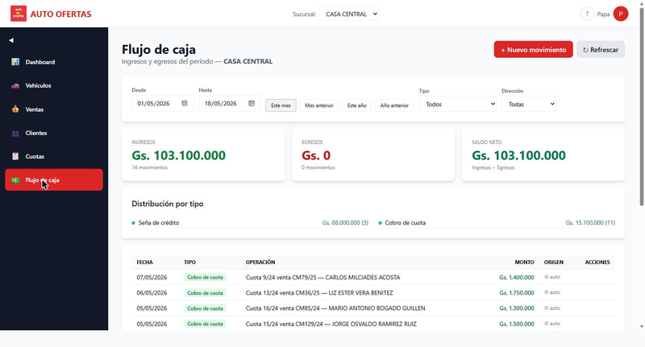
Hay 3 KPIs arriba:
Y abajo, la tabla con cada movimiento del período. Los movimientos generados automáticamente (cobros de cuotas, señas, ventas contado) aparecen marcados con ⚙ auto — esos no se pueden borrar a mano, se ajustan automáticamente cuando cambias la venta o cuota original.
Los movimientos manuales se cargan con el botón "+ Nuevo movimiento":
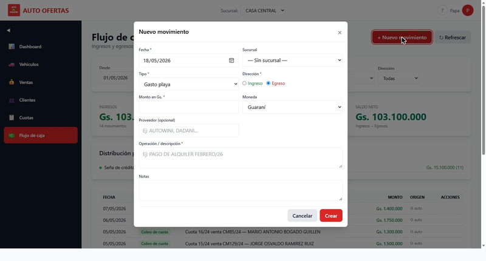
Completá:
Clic en "Crear".
💡 Filtros de período rápidos arriba: Este mes / Mes anterior / Este año / Año anterior. Útiles cuando el contador te pide "el flujo de mayo".
A medida que usás el sistema vas a encontrarte con cosas para arreglar. Acá los casos típicos y cómo proceder.
Cómo detectarlas:
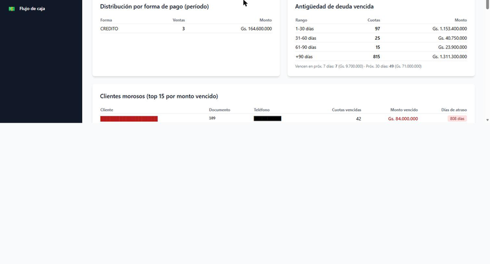
Qué hacer:
⚠️ NO "marques pagada" una cuota si no recibiste el dinero. Eso rompe el flujo de caja y los reportes.
Pasa por:
Cómo detectarlas:
En 💰 Ventas, hay chips de calidad arriba de la tabla. Clic en "⚠ Sin cliente" para filtrar (ver imagen de la sección 5 — los chips son Todas / Solo reales / Códigos MIG / Placeholder / Sin cliente / Sin vehículo).
Cómo arreglarlas:
💡 Si no sabés quién compró ese auto (caso de migración vieja), dejala con cliente "Cliente General" o creá uno temporal con doc autogenerado, hasta que aclares la duda con el papelerío físico.
Las ventas migradas de la planilla Excel vieja llegan con números tipo MIG-001, MIG-2018-XX, etc. Eso indica que se importaron desde la planilla histórica.
Qué hacer con ellas:
MIG solo identifica el origen.CM/26-001, hacelo desde Editar → campo "N° de venta".⚠️ NO las borres en masa aunque parezcan basura. Muchas tienen cuotas pendientes de cobro reales — perderías esa cartera.
Mismo patrón: chips de calidad en 🚗 Vehículos:
VIN-DUMMY o VIN12345 generado automáticamente. Si conseguís el VIN real, reemplazalo.Los chips se ven en la imagen de la sección 3 — incluyen Todos / Sin precio / VIN placeholder.
Cuando se migró de la planilla vieja, varios clientes quedaron con docs tipo DRV026-001, SUC026-XXX o CUOTA-XX — placeholders que la migración generó porque no se conocía la cédula real.
Cómo detectarlos:
En 👥 Clientes → chip "⚠ Doc autogenerado".
Cómo arreglarlos:
💡 Estos clientes funcionan perfectamente en el sistema; el documento placeholder es sólo cosmético. Reemplazarlo es bueno para reportes y filtros pero no urgente.
Chip "⚠ Sin teléfono" en /clientes.
Sin teléfono no podés mandar WhatsApp ni llamar para cobranza. Cada vez que el cliente venga, pedí el número y editalo.
(ej. el vendedor cargó el modelo o cliente equivocado)
Si el cambio incluye el vehículo, el sistema libera al vehículo viejo (vuelve a estado "Disponible") y marca al nuevo como "Vendido".
⚠️ Si cambiás el monto de una venta que ya tenía cuotas generadas, las cuotas NO se recalculan automáticamente. Tenés que entrar al modal de cuotas y ajustarlas (o borrarlas y regenerar el plan).
El sistema tiene audit log que registra todas las acciones (crear/editar/borrar). Para casos críticos de pérdida de datos contactá al admin del sistema — tenemos backups semanales que se pueden restaurar.
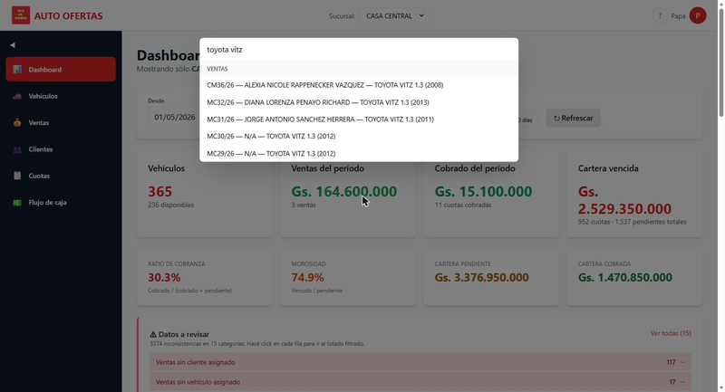
Apretá Ctrl + K (o Cmd + K en Mac) desde cualquier pantalla. Se abre un buscador que mira a la vez en ventas, clientes y vehículos. Tipeá lo que sea — N° de venta, nombre, VIN, marca — y clickeá el resultado para ir directo.
Útil cuando alguien te dice "vino el cliente Pérez de la venta tal" y no querés navegar por menús.
Si tu empresa tiene 2 sucursales (ej. CASA CENTRAL y Suc B), el selector arriba del navbar filtra todos los reportes y listados por la elegida. "Todas" muestra el agregado.
Cambiarla NO afecta a otros usuarios — cada uno tiene su propio filtro.
Casi todas las pantallas con métricas (Dashboard, Ventas, Flujo de caja) tienen el filtro desde / hasta con quick ranges. Cambiarlo solo afecta lo que ves vos — no toca los datos.
El sistema tiene backups automáticos semanales (cada lunes 03:00 UTC, mientras el GitHub Action esté configurado con los secrets correctos). También podés generar uno manual:
python scripts/backup_db.pyLos backups quedan en backups/snapshot_<fecha>.json.gz y NO se suben a GitHub (contienen datos personales).
F5. Si sigue mal, hacé logout y volvé a entrar.Las capturas las tomé directamente del sistema en producción durante una sesión de Chrome MCP. Quedaron embebidas en la conversación del chat con Claude.
Para que el manual se vea con imágenes, guardá cada captura del chat con el nombre exacto que aparece en la tabla siguiente, dentro de la carpeta C:\Users\prueb\CascadeProjects\playa\docs\imagenes\.
Procedimiento en el chat:
docs\imagenes\ y guardala con el nombre indicado.| # | Nombre de archivo | Estado | Descripción |
|---|---|---|---|
| 1 | 01-login.png | ✅ OK | Pantalla /login vacía. |
| 2 | 01-logout.png | ✅ OK | Menú de usuario con "Cerrar sesión". |
| 3 | 02-dashboard.png | ✅ OK | Dashboard con KPIs. |
| 4 | 03-vehiculos-lista.png | ✅ OK | Inventario vehículos con chips de calidad. |
| 5 | 04-cliente-nuevo.png | ✅ OK | Modal "Nuevo cliente" con form vacío. |
| 6 | 05-ventas-lista.png | ⚠ Tiene datos | Lista de ventas con chips MIG / Sin cliente / etc. |
| 7 | 05-venta-nueva.png | ✅ OK | Modal "Nueva venta" con form vacío. |
| 8 | 06-cuotas-modal.png | ✅ OK | Modal "Cuotas de la venta" (sólo montos). |
| 9 | 07-cliente-detalle.png | ⚠ Tiene datos | Detalle del cliente con sus ventas y cuotas. |
| 10 | 07-cuotas-tabla.png | ✅ OK | Tabla de cuotas con botones "✓ Pagar". |
| 11 | 07-pagar-modal.png | ⚠ Tiene datos | Modal "Registrar pago" mostrando datos de la cuota. |
| 12 | 09-flujo-caja.png | ⚠ Tiene datos | Flujo de caja con tabla de operaciones. |
| 13 | 09-nuevo-movimiento.png | ✅ OK | Modal "Nuevo movimiento" con form vacío. |
| 14 | 10-morosos.png | ✅ OK | Panel "Clientes morosos" YA OFUSCADO. |
| 15 | 11-ctrl-k.png | ⚠ Tiene datos | Palette Ctrl+K mostrando resultados. |
Las marcadas con ⚠ tienen datos reales sin ofuscar. Para ofuscarlas vos antes de capturar, pegá esto en la consola del browser (F12 → Console) en la página correspondiente:
(function(){
const W=new Set(['AUTO','OFERTAS','CASA','CENTRAL','SUCURSAL','TOYOTA',
'HONDA','NISSAN','KIA','CHEVROLET','SUZUKI','FORD','MAZDA','HYUNDAI',
'VITZ','RACTIS','SIENTA','AURIS','ALLION','SPORTAGE','PASSO','RAV4',
'COROLLA','FIT','CIVIC','MARCH','PLATA','NEGRO','BLANCO','GRIS',
'ROJO','AZUL','VERDE','BEIGE','DORADO','MARRON','CELESTE',
'PYG','USD','EF','TB','CJ','AC','MIG']);
function isW(t){return W.has(t)||t.split(/\s+/).every(w=>W.has(w));}
function obf(t){
if(!t||t.length<6||isW(t))return false;
return /^[A-ZÁÉÍÓÚÑ]+(\s+[A-ZÁÉÍÓÚÑ]+){1,5}$/.test(t)
||/^CUOTA\d{4,}$/i.test(t)
||/^DRV\d{3}-\d+$/i.test(t)
||/^SUC\d{3}-\d+$/i.test(t)
||/^\d{6,10}$/.test(t)
||/^0\d{3}[\s-]?\d{6,7}$/.test(t)
||/^09\d{2}[\s-]?\d{3}[\s-]?\d{4}$/.test(t)
||/^0\d{9,10}$/.test(t);
}
function walk(n){
if(n.nodeType===3){const t=n.textContent.trim();if(obf(t))n.textContent='█'.repeat(Math.min(t.length,18));}
else if(n.nodeType===1&&!['SCRIPT','STYLE','INPUT','TEXTAREA','SELECT','OPTION'].includes(n.tagName)){
for(const c of [...n.childNodes])walk(c);
}
}
walk(document.body);
})();Después usá Win+Shift+S para recortar y guardar la captura en docs\imagenes\<nombre>.png.
Manual versión 1.0 — corresponde al sistema desplegado en producción hasta los commits:
e1610c6 (Sale: distinguir status del contrato vs estado de cobranza)1f59b18 (Fix: BranchContext espera isAuthenticated antes de fetchear branches)Las mejoras de las ramas staging (recordatorios automáticos, PDF de cronograma, búsqueda fuzzy, etc.) no están cubiertas acá — se documentarán en la versión 2.0 del manual cuando se haga el próximo deploy.